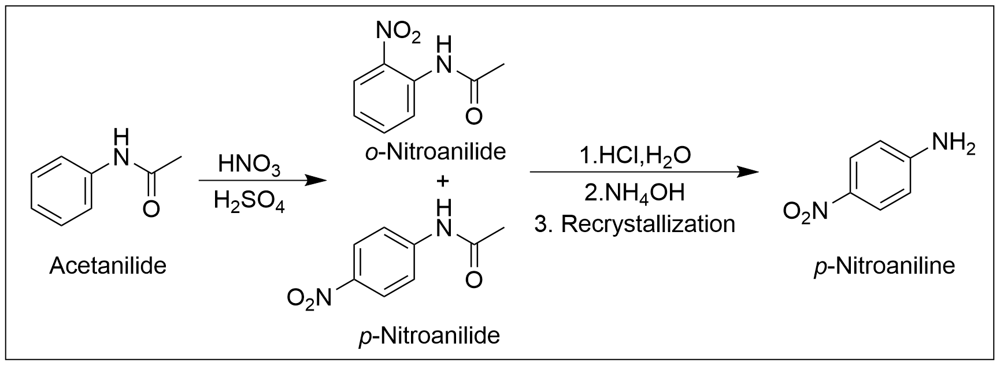
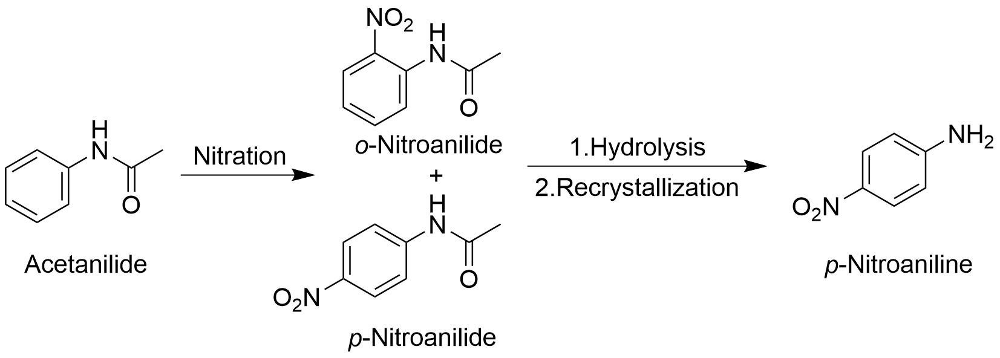
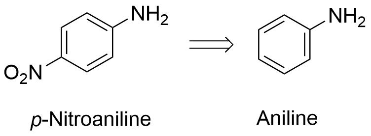

In this experiment you will synthesize p-nitroaniline starting from acetanilide (Figure 1). The initial step is a nitration reaction, a type of electrophilic aromatic substitution, in which a nitro group replaces one of the hydrogens on the benzene ring. Next, amide hydrolysis provides para-nitroaniline, which is separated from the ortho-isomer by recrystallization.

The challenge of starting from simple materials to synthesize more complex molecules is central to organic chemistry. Your synthetic target, p-nitroaniline is commercially available for $4.56/g. Let us assume that this exorbitant price charged by Aldrich is beyond your means, but that you have access to cheap, readily available starting materials in your laboratory. The problem is to devise a step or a series of steps connecting your synthetic target to those starting materials. In planning this route, think initially in terms of an overall plan or strategy, leaving the operational details or tactics for later. A retrosynthetic approach is a synthetic strategy that involves starting the product and working backwards toward potential starting materials. Identify a key group in the molecule that you are trying to make, and ask yourself what precursors you could use to construct that key structural feature.

For this experiment the target, p-nitroaniline, is a nitro- substituted aniline. Without worrying exactly how the aryl amine will be converted to the nitro compound, the chemist uses the retrosynthetic arrow to show that the nitro function in the target “suggests as a starting material” aniline (Figure 2). Given your knowledge of electrophilic aromatic substitution, a para-substituted nitroaniline suggests for its synthesis a nitration reaction, with the corresponding aniline as the starting material. Aniline is a common chemical found on a laboratory shelf. Aldrich sells aniline for about $0.06/g.
The tactical aspects of the p-nitroaniline synthesis are left for you to consider. It is a matter of providing specific reagents and methods for making the synthetic connection between aniline and p-nitroaniline. This time, you will work in the forward direction. Finally, the detailed synthesis plan is put to the ultimate test in the laboratory. Few syntheses proceed exactly as planned. It is a measure of your skill as an organic chemist to overcome obstacles and bring a well-conceived synthetic scheme to a successful conclusion.
Notes: Usually, the reaction flask is heated in an oil bath or sand bath. In the video, sulfuric acid is added by pouring from a beaker. Is there a better way to add acid, given the various safety hazards? You can skip 3:39-5:20 of the video as it is not related to the procedure. However, it does provide an explanation of the reaction mechanism which might be helpful. When adding water and hydrochloric acid to the reaction flask via a funnel (7:13), be sure to secure the funnel with a ring stand. DO NOT touch hot RBF (8:32). Let the reaction flask cool before transferring.